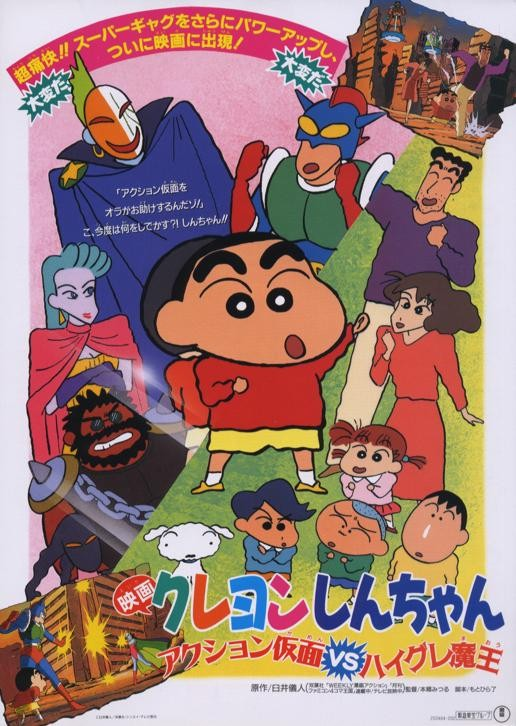

-
크레용 신짱: 액션가면 VS 하이구레 마왕

Release 1993.00.00 Runtime 93분 Age Rating 전체 관람가 Director 혼고 미츠루 Cast 야지마 아키코, 나라하시 미키, 후지와라 케이지, 겐다 테쇼, 노자와 나치 TV 속 영웅 액션가면(겐다 텟쇼 목소리 분)을 동경하는 카스카베의 소년 노하라 신노스케(야지마 아키코 목소리 분)는, 초코비 속에서, 얻기 힘들다는 넘버 99번 황금 액션가면 카드를 얻게 되고, 신 짱의 아빠 노하라 히로시(후지와라 케이지 목소리 분), 엄마 노하라 미사에 (나라하시 미키 목소리 분), 애견 시로(마시바 마리 목소리 분)가 액션 전사로 선택되어 저쪽 세계의 지구로 보내진다. 저쪽 세계의 지구로 간 신 짱 일가는, 액션가면의 동료인 사쿠라 리리코와 키타 카스카베 박사를 만나, 이 세계가 '하이그레 마왕' 이라는 자들에게 공격당하고 있고, TV에 나오던 액션가면이 사실은 진짜라는 사실을 알게 된다. 하이그레 마왕이 액션 가면의 액션 스톤을 훔쳐서 액션 가면이 저쪽 세계로 올 수 없기 때문에 신 짱 일가가 또다른 액션 스톤을 사용해 액션 가면을 불러와야 한다고 한다. 그러나, 신 짱이 액션 스톤을 삼켜 버리고, 모두들 피해 카스카베 박사의 연구소로 도망치는데..Date Time Theater Screen -
카운트
Release 2023.02.22 Runtime 109분 Age Rating 12세 이상 관람가 Director 권혁재 Cast 전선규, 성유빈, 고창석, 오나라, 장동주, 고규필, 김민호 1988년 올림픽 금메달리스트지만 1998년 지금은 평범한 고등학교 선생인 ‘시헌’(진선규). 선수 생활 은퇴 후 남은 건 고집뿐, 모두를 킹받게 하는 마이웨이 행보로 주변 사람들의 속을 썩인다. 그러던 어느 날, 우연히 참석한 대회에서 뛰어난 실력에도 불구하고 승부 조작으로 기권패를 당한 ‘윤우’(성유빈)를 알게 된 ‘시헌’은 복싱부를 만들기로 결심한다. 아내 ‘일선’(오나라)의 열렬한 반대와, ‘교장’(고창석)의 끈질긴 만류도 무시한 채, ‘시헌’은 독기만 남은 유망주 ‘윤우’와 영문도 모른 채 레이더망에 걸린 ‘환주’(장동주), ‘복안’(김민호)을 데리고 본격적인 훈련에 돌입하기 시작하는데...! 쓰리, 투, 원! 긍정 파워 풀충전! 그들만의 가장 유쾌한 카운트가 시작된다.Date Time Theater Screen -
스즈메의 문단속
Release 2023.03.08 Runtime 122분 Age Rating 12세 이상 관람가 Director 신카이 마코토 Cast 하라 나노카, 마즈무라 호쿠도, 후카즈 에리 “이 근처에 폐허 없니? 문을 찾고 있어” 규슈의 한적한 마을에 살고 있는 소녀 ‘스즈메’는 문을 찾아 여행 중인 청년 ‘소타’를 만난다. 그의 뒤를 쫓아 산속 폐허에서 발견한 낡은 문. ‘스즈메’가 무언가에 이끌리듯 문을 열자 마을에 재난의 위기가 닥쳐오고 가문 대대로 문 너머의 재난을 봉인하는 ‘소타’를 도와 간신히 문을 닫는다. “닫아야만 하잖아요, 여기를!” 재난을 막았다는 안도감도 잠시, 수수께끼의 고양이 ‘다이진’이 나타나 ‘소타’를 의자로 바꿔 버리고 일본 각지의 폐허에 재난을 부르는 문이 열리기 시작하자 ‘스즈메’는 의자가 된 ‘소타’와 함께 재난을 막기 위한 여정에 나선다. “꿈이 아니었어” 규슈, 시코쿠, 고베, 도쿄 재난을 막기 위해 일본 전역을 돌며 필사적으로 문을 닫아가던 중 어릴 적 고향에 닿은 ‘스즈메’는 잊고 있던 진실과 마주하게 되는데…Date Time Theater Screen